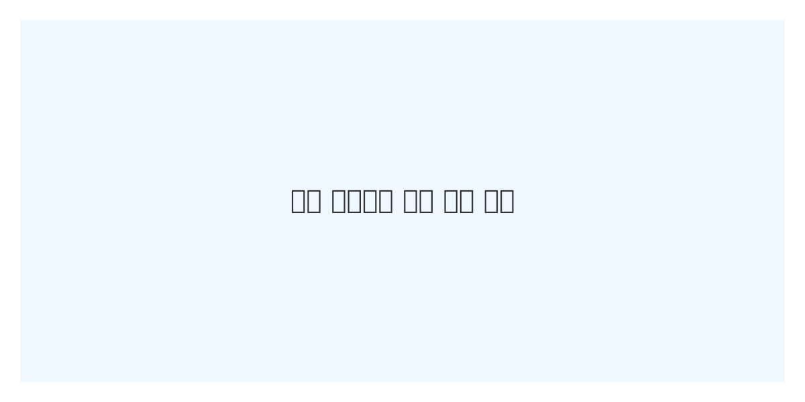
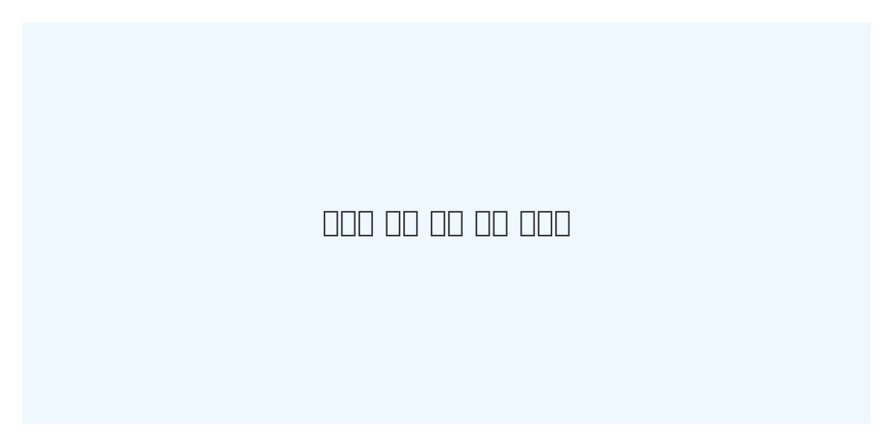
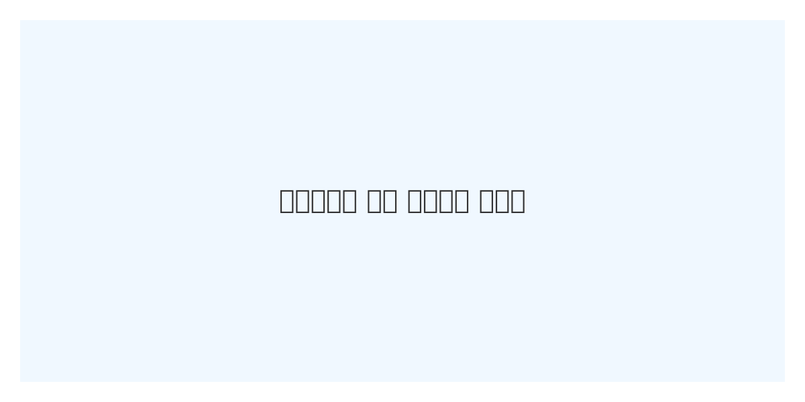
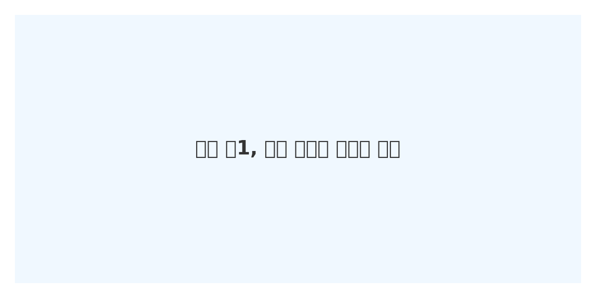

#시험 전략 & 성적 관리




성적이 오르는 아이들의 공부 습관
2025.05.18
성적이 오르는 아이들의 공통된 특징은 바로 꾸준한 복습과 자기 주도 학습입니다. 단기적인 암기보다 개념을 깊이 있게 이해하고, 노트 정리와 문제 풀이를 통해 자신의 것으로 만드는 과정이 매우 중요합니다.
또한 공부 환경도 성적에 영향을 미칩니다. 스마트폰, 게임기 등 방해 요소를 줄이고, 정해진 시간에 공부하는 루틴을 만드는 것이 성과로 이어질 수 있습니다.
#수학 공부법
중학생이 되면 수학 점수가 떨어지는 이유
2025.05.18
초등학교 시절 수학은 대부분 연산과 간단한 도형 중심의 과목이기 때문에,
선행이나 반복 학습으로 일정 수준까지 쉽게 따라갈 수 있습니다.
그러나 중학교에 올라오면 수학의 난이도와 속도가 급격히 상승합니다.
첫째, 개념 중심의 학습이 중요해지지만, 학생들이 여전히 문제풀이 중심으로 접근하는 경우가 많습니다.
개념을 이해하지 못하고 공식만 외우는 방식으로는 중학교 수학에서 높은 점수를 얻기 어렵습니다.
둘째, 학습량과 과목 수가 많아져 시간 배분이 어려워지며, 수학 공부의 우선순위가 밀리는 경우도 많습니다.
초등학교 때는 매일 수학 문제를 풀던 아이도, 중학교에서는 영어·사회·과학 등의 과목에 밀려 소홀해지기 쉽습니다.
셋째, 학습 습관의 차이가 드러납니다. 자기주도 학습이 가능한 학생과 그렇지 못한 학생의 점수 차이는 중학교부터 급격히 벌어집니다.
수학은 단기적으로 암기해서 해결할 수 있는 과목이 아니기 때문에, 규칙적인 복습과 개념 정리가 필수입니다.
결국 중학교 수학에서 성공하려면, 개념 중심의 사고력, 꾸준한 복습 습관, 효율적인 시간 관리 능력이 함께 필요합니다.
점수가 떨어졌다고 낙심하기보다, 지금부터 수학을 대하는 방법을 바꾸는 것이 중요합니다.
#수학 공부법
초등 수학, 이렇게 안 하면 중학교 때 반드시 무너집니다
2025.05.18
초등학교 수학을 단순히 계산 훈련으로만 여기고 지나치는 경우, 중학교 진입 후 심각한 성적 하락으로 이어질 수 있습니다. 왜일까요? 초등 수학은 단순 연산 이상의 ‘수학적 사고의 기반’을 형성하는 시기이기 때문입니다.
첫째, 문장제 문제 해결력이 부족한 경우가 많습니다. 많은 학생이 연산은 빠르지만, “무엇을 묻고 있는가?”를 파악하지 못합니다. 이는 사고력 부족과 직결되며, 중학교 이후 서술형 문제에서 큰 약점으로 드러납니다. 초등시기부터 조건, 질문, 단위를 구분해 읽는 습관을 길러야 합니다.
둘째, 수학 개념을 단순히 ‘외우는 것’으로 착각하는 경향이 많습니다. ‘구구단’처럼 암기로 해결했던 방식이 나눗셈, 분수, 소수로 확장될수록 통하지 않습니다. “왜 그런지”에 대해 스스로 설명할 수 있어야 중등 수학에서도 개념을 유연하게 적용할 수 있습니다.
셋째, 수학을 '정답을 맞히는 게임'으로만 접근하면 안 됩니다. 사고과정이 생략되고, 실수를 반복하게 됩니다. 초등 수학에서 틀린 문제는 ‘오답’이 아니라 ‘사고력 부족을 드러내는 기회’라는 인식을 심어줘야 합니다.
결론적으로 초등 수학을 제대로 다지지 않으면, 중등 수학에서는 추상적 개념과 논리적 사고를 감당하지 못하게 됩니다. 지금 시점에서 아이가 왜 이 문제를 그렇게 풀었는지 설명할 수 있는지 꼭 점검해보세요. 초등 수학은 단순한 학습이 아닌, 인생 수학 체력의 기초입니다.
#공부 습관 만들기
이 공부법으로 1등급 됐어요 – 일주일 공부 루틴 완전 공개
2025.05.18
많은 학생들이 ‘공부 열심히 했는데 성적이 안 나와요’라고 말합니다. 이 말 속엔 공부량은 충분했지만, 공부 방법이 비효율적이었다는 진실이 숨겨져 있습니다. 공부를 잘하는 학생은 반드시 ‘루틴’이 있고, 그 루틴은 전략적입니다.
월~금 평일에는 ‘복습 중심의 리듬’을 유지합니다. 매일 배운 내용을 ‘그날 정리’하는 습관은 학원이나 과외보다 훨씬 강력한 효과를 발휘합니다. 단 30분이더라도 ‘수업 내용 요약 + 핵심 개념 정리 + 오늘의 헷갈린 개념’만으로 충분합니다.
토요일은 약점 보완 + 오답 노트 시간입니다. 단순히 많이 푸는 날이 아니라 ‘내가 틀린 이유’를 찾는 날입니다. 특히 수학은 유형별 사고방식을 분석하는 것이 중요합니다. 그냥 정답을 외우는 것이 아니라, ‘왜 그렇게 생각했는가’를 기록해야 실력이 쌓입니다.
일요일은 다음 주 준비 + 쉬는 시간 확보. 일요일은 감정 회복과 정비 시간입니다. 그러나 다음 주 단원 예습을 20분만 해둔다면 수업 집중력과 이해도가 2배로 상승합니다. 이게 바로 공부 잘하는 학생들의 비밀입니다.
공부는 "많이 하는 것"보다 "꾸준히 하는 것"이 먼저입니다. 무계획의 열심은 지치게 만들고, 작은 루틴은 성취감을 줍니다. 이번 주부터라도 3일만 루틴을 유지해보세요. 결과는 분명히 달라질 것입니다.
#부모 교육 가이드
수학, 학원 안 가도 됩니다 – 독학으로 고등까지 가는 전략
2025.05.18
"수학은 독학이 불가능한 과목이다?" 아닙니다. 오히려 수학은 독학이 가장 잘 통하는 과목 중 하나입니다. 전제 조건은 단 하나, 제대로 된 방향과 전략이 있다는 것.
첫 단계는 교과서 개념 완전 정복입니다. 학원에서는 빠르게 넘어가는 기본 개념들을 스스로 쓰고, 설명하고, 예시를 만들어보는 방식으로 접근하세요. 특히 정의와 성질을 ‘왜 그런지’ 설명하는 연습은 수학의 기초 체력을 키웁니다.
둘째는 무료 강의의 적극 활용입니다. EBSi, 유튜브, 강의 플랫폼에선 질 좋은 무료 강의들이 넘칩니다. 단, 영상만 보는 것이 아니라 ‘강의 → 개념 노트 정리 → 대표 문제 풀기’ 루틴을 갖추는 것이 핵심입니다.
셋째는 오답노트 활용법입니다. 틀린 문제를 단순히 “실수”라고 넘기지 마세요. 유형, 틀린 이유, 필요한 개념을 3줄로 요약하고 반복 복습하세요. “틀린 이유를 말할 수 있는가?”가 진짜 실력입니다.
수학 독학의 핵심은 ‘질문 없이 개념을 이해할 수 있는 수준’까지 반복하는 것입니다. 학원 없이도 자기 주도 학습의 습관만 갖추면, 중간·기말은 물론 수능까지 혼자서도 충분히 해낼 수 있습니다.